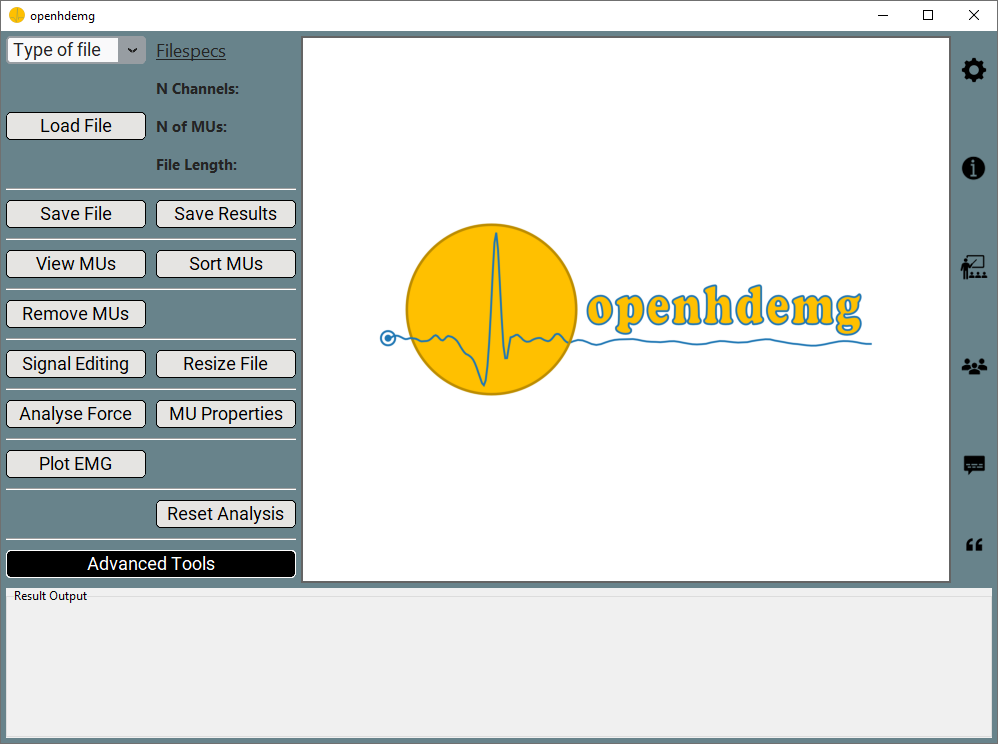

Settings
Since the release of version 0.1.0-beta.4, we have introduced GUI settings. These allow you to customise functions behaviour when using the GUI, making it more flexible and adaptable to specific users needs.
Access GUI settings
Accessing these GUI settings is simple: just click on the Gear icon located at the top-right corner of the GUI window.

Upon clicking the settings icon, a Python file will open in your default text editor. Here, you'll be able to modify the settings according to your requirements.
Always remember to save the Python settings file after changing the variables, or the changes will not be effective.
If the Python file does not open, please read the Troubleshooting section.
Modify GUI settings
The GUI settings file (named settings.py) is organised into distinct topic sections.
All the variables that can be modified are labelled as:
- Name of the calling function + _ _ + Name of the variable
In this way, the values that each variable can assume can be discovered from the API section of this website by navigating into the topic, then into the Name of the function and then looking at the specific variable.
The variables that can be modified from the GUI settings, as well as their values, can differ between different openhdemg releases. Therefore, the user is always encouraged to check the specifics APIs, and not to rely on this guide, which only serves didactical purposes.
openfiles
The first section is named openfiles and controls how files are loaded into openhdemg or saved in .json format.
The API section for this topic is here.
For example, the GUI behaviour when loading Custom .csv files can be adjusted in the following code snippet:
# in emg_from_customcsv()
emg_from_customcsv__ref_signal = "REF_SIGNAL"
emg_from_customcsv__raw_signal = "RAW_SIGNAL"
emg_from_customcsv__ipts = "IPTS"
emg_from_customcsv__mupulses = "MUPULSES"
emg_from_customcsv__binary_mus_firing = "BINARY_MUS_FIRING"
emg_from_customcsv__accuracy = "ACCURACY"
emg_from_customcsv__extras = "EXTRAS"
emg_from_customcsv__fsamp = 2048
emg_from_customcsv__ied = 8
In the first line of code, emg_from_customcsv__ref_signal = "REF_SIGNAL" indicates that the variable ref_signal belonging to the function emg_from_customcsv is set to "REF_SIGNAL".
The complete documentation of the function emg_from_customcsv() can be accessed here. Reading the specific APIs, you will always know what parameters can be passed to each variable!
Similarly, the GUI behaviour when saving .json files can be adjusted in the following code snippet:
# in save_json_emgfile()
save_json_emgfile__compresslevel = 4
And the corresponding APIs can be accessed here.
analysis
The section named analysis controls how basic MUs properties (i.e., MUs recruitment/derecruitment thresholds, discharge rate and accuracy measures) are calculated.
The API section for this topic is here.
For example, in the following code snippet we can adjust how many firings are used to calculate the recruitment/derecruitment thresholds or how the accuracy measure is computed.
# in basic_mus_properties()
basic_mus_properties__n_firings_rt_dert = 1
basic_mus_properties__accuracy = "default"
basic_mus_properties__ignore_negative_ipts = False
basic_mus_properties__constrain_pulses = [True, 3]
The corresponding APIs for the function basic_mus_properties can be accessed here.
The section named tools controls additional functionalities that are necessary for the usability of the library. The functions contained in this section can be considered as "tools" or shortcuts necessary to operate with the HD-EMG recordings.
The API section for this topic is here.
For example, in the following code snippet we can adjust how to resize the emgfile and how to deal with the accuracy measure in the new resized file.
# in resize_emgfile()
resize_emgfile__how = "ref_signal"
resize_emgfile__accuracy = "recalculate"
resize_emgfile__ignore_negative_ipts = False
The corresponding APIs for the function resize_emgfile can be accessed here.
pic
The section named pic controls the Persistent Inward Currents estimation.
The API section for this topic is here.
For example, in the following code snippet we can adjust how to estimate Delta F.
compute_deltaf__recruitment_difference_cutoff = 1.0
compute_deltaf__corr_cutoff = 0.7
compute_deltaf__controlunitmodulation_cutoff = 0.5
The corresponding APIs for the function compute_deltaf can be accessed here.
muap
The section named muap controls all the functionalities that require MU action potentials. Currently, it controls the behaviour of functionalities such as MU tracking, duplicate removal and conduction velocity estimation, among others.
The API section for this topic is here.
For example, in the following code snippet we can adjust how to perform MU tracking. As you might have noticed using the GUI, it is already possibile to specify many parameters for MU tracking directly in the GUI, and these settings here offer an additional level of customisability.
# in tracking()
tracking__firings = "all"
tracking__derivation = "sd"
The corresponding APIs for the function tracking can be accessed here.
electrodes
The section named electrodes allows to specify a custom order for electrodes sorting. The sorting order is used any time the grid channels need to be oriented in a specific manner, wich usually reflects how the operator positioned the grid on the skin. A number of common sorting orders are already present the library. However, if the needed sorting order is not available, the user can specify any custom order in this section. This allows for maximum flexibility of the sorting functionalities.
The API section for this topic is here.
In the following example, we show how the sorting order of a grid can be obtained and specified.
Here you can see the channels order as displayed on the grid. This example refers to the commercially available grid GR08MM1305.
Channel Order GR08MM1305
0 1 2 3 4
0 64 39 38 13 12
1 63 40 37 14 11
2 62 41 36 15 10
3 61 42 35 16 9
4 60 43 34 17 8
5 59 44 33 18 7
6 58 45 32 19 6
7 57 46 31 20 5
8 56 47 30 21 4
9 55 48 29 22 3
10 54 49 28 23 2
11 53 50 27 24 1
12 52 51 26 25 NaN
As you can see, this grid of electrodes is composed of 5 columns (from 0 to 4) and 13 rows (from 0 to 12) for a total of 64 channels. Given that the channels are represented in a quadrilateral structure, one channels will result empty.
Given that Python is in base 0, we first need to convert the channels in base 0, with the final matrix looking like this:
Channel Order in base 0
0 1 2 3 4
0 63 38 37 12 11
1 62 39 36 13 10
2 61 40 35 14 9
3 60 41 34 15 8
4 59 42 33 16 7
5 58 43 32 17 6
6 57 44 31 18 5
7 56 45 30 19 4
8 55 46 29 20 3
9 54 47 28 21 2
10 53 48 27 22 1
11 52 49 26 23 0
12 51 50 25 24 NaN
After the conversion from base 1 to base 0, we can proceed creating a list of lists, where each internal list represents a column of the grid, as follows:
custom_sorting_order = [
[63, 62, 61, 60, 59, 58, 57, 56, 55, 54, 53, 52, 51],
[38, 39, 40, 41, 42, 43, 44, 45, 46, 47, 48, 49, 50],
[37, 36, 35, 34, 33, 32, 31, 30, 29, 28, 27, 26, 25],
[12, 13, 14, 15, 16, 17, 18, 19, 20, 21, 22, 23, 24],
[11, 10, 9, 8, 7, 6, 5, 4, 3, 2, 1, 0, np.nan],
]
The empty channel can be indicated with np.nan, which stands for "not a number". Similarly, we can mark more missing channels with the same approach.
custom_sorting_order = [
[63, 62, 61, 60, 59, 58, np.nan, 56, 55, 54, 53, 52, 51],
[38, 39, 40, 41, 42, 43, 44, 45, 46, 47, 48, 49, 50],
[37, 36, 35, 34, 33, 32, 31, 30, 29, 28, 27, 26, 25],
[12, 13, 14, 15, 16, 17, 18, 19, 20, 21, 22, 23, 24],
[11, 10, 9, np.nan, 7, 6, 5, 4, 3, 2, 1, 0, np.nan],
]
What variables can be modified?
Please note that only the variables present in the settings.py file can be modified. If you would like to modify additional variables, please get in touch with us.
Additionally, you cannot remove the unused variables from the settings file! You can only modify their value.
Restore GUI settings
If you accidentally modify some variables and the GUI stops working properly, you can restore the original settings by copying and pasting the content of the backup_settings.py file. This will be visible in the file explorer of your editor next to the settings.py file.
Troubleshooting
The settings don't show up
If clicking the Gear icon doesn't open the settings.py file, it might be because your operating system doesn't recognize the .py file extension. This can happen if you've never opened a Python file before. To solve this:
-
Double-click on any Python file (do this from outside Visual Studio Code, or it will take care of the process and your operating system will not associate the Python file to a specific software).
-
A window should prompt you to choose which software to use to open the file.
-
Select Visual Studio Code and set it as the default application for .py files.
-
After doing this, try restarting the openhdemg GUI and Visual Studio Code. The Gear icon should now function correctly.
If the issue persists, please continue reading.
Locate the settings.py file
If the settings.py file does not open after clicking on the Gear icon, you can still manually navigate to this file and change the settings. The settings.py file can be accessed navigating the file explorer of your editor (usually on the left side of Visual Studio Code).
In your file explorer, navigate as follows:
-
Click on your virtual environment folder
-
Click on Lib
-
Click on openhdemg
-
Click on gui
-
Here you will find the settings.py file. Double click it and edit the settings as needed.
-
Save the file
Changes are not effective
Always remember to save the Python settings file after changing the variables, or the changes will not be effective. It is not necessary to restart the GUI when changes are made to the settings.py file.
More questions?
We hope that this tutorial was useful. If you need any additional information, do not hesitate to read the answers or ask a question in the openhdemg discussion section. If you are not familiar with GitHub discussions, please read this post. This will allow the openhdemg community to answer your questions.